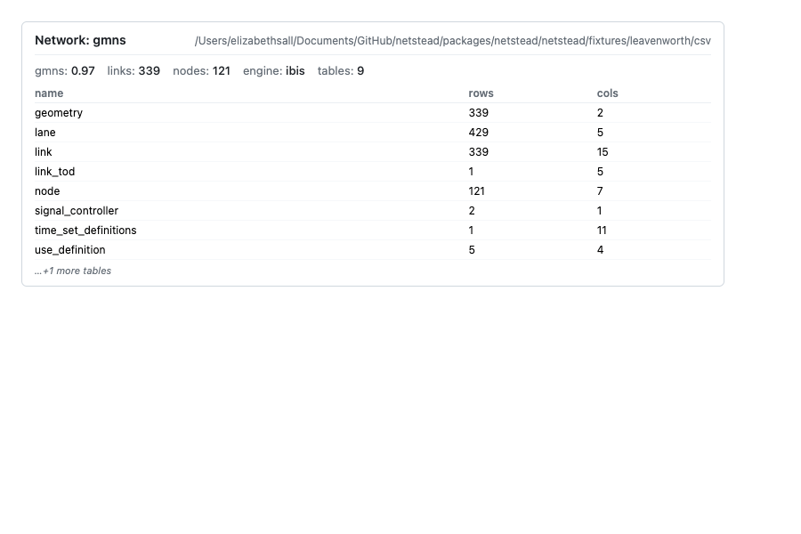
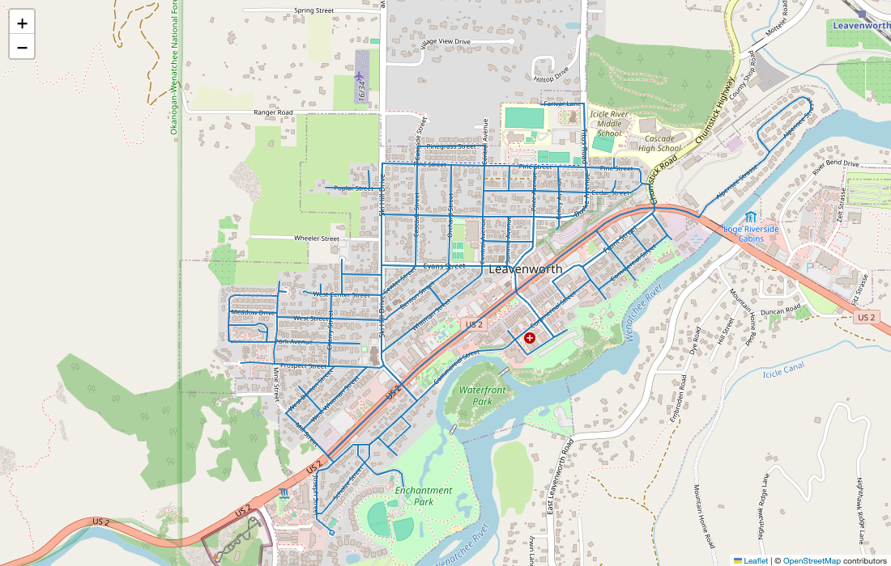
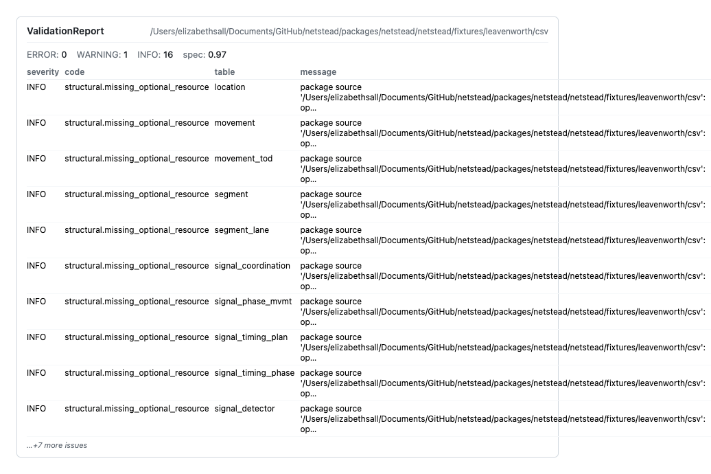
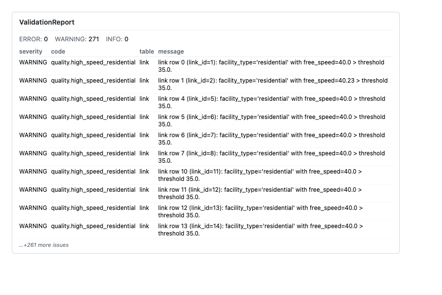
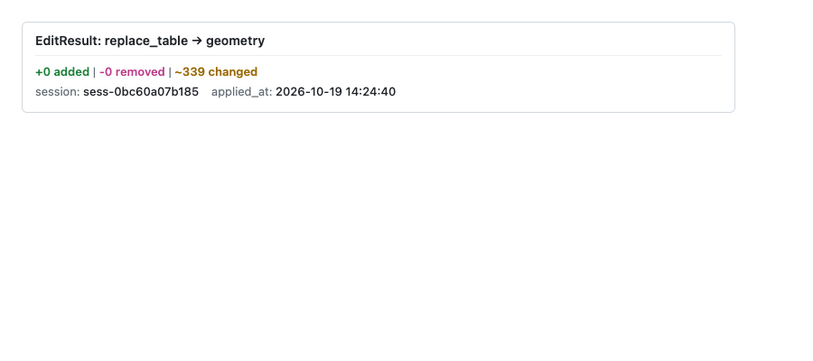
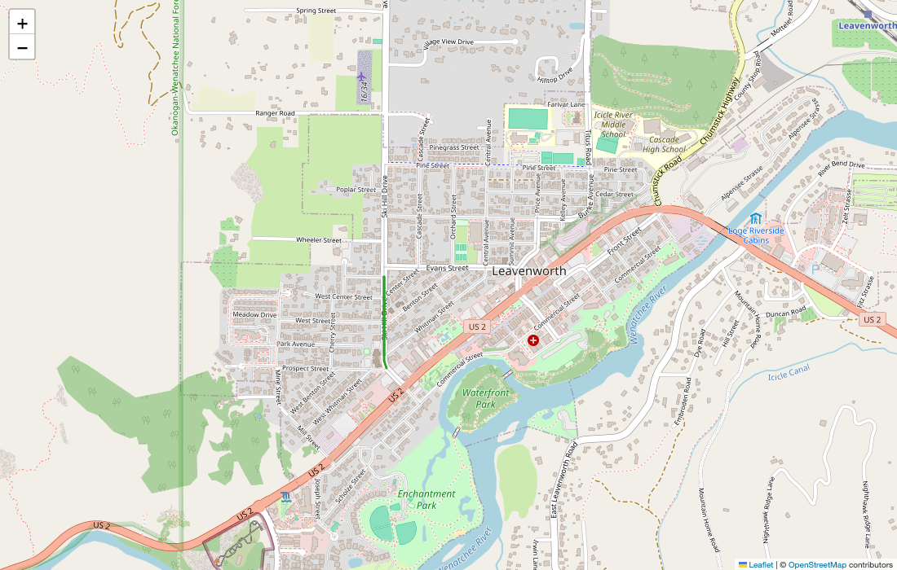

Python tour (notebook) ¶
What you’ll build ¶
You’ll work through the bundled Leavenworth, WA network in one notebook session and produce, in order:
- A folium / matplotlib map of the full network.
- A validation report rendered as an HTML card.
- A data-quality report grouped by severity.
- A simplify-geometry edit, rendered as a before/after diff (then rolled back).
- A scoped subgraph around a single node, rendered side-by-side with the original.
Total runtime: under two minutes on a laptop. The fixture ships inside the netstead wheel (the CSV flavour is about 140 KB).
Prerequisites ¶
The [clean] extra brings in shapely + geopandas + pyproj for the geometry edit; [graph] brings in scipy for the scope step and the data-quality rule pack; [notebook] is reserved for future widgets — the _repr_html_ cards used below render without it.
netstead 1.0.0b2 is not on PyPI yet, so the beta installs from GitHub (both packages in one command; see Install and troubleshoot):
pip install \
"dbcorral @ git+https://github.com/e-lo/netstead.git@main#subdirectory=packages/corral" \
"netstead[clean,graph,notebook] @ git+https://github.com/e-lo/netstead.git@main#subdirectory=packages/netstead"
For the map steps, either folium (interactive Leaflet) or matplotlib (static fallback) works — pick one:
The steps below show both paths.
Steps ¶
1. Load the fixture ¶
Start by loading the bundled Leavenworth network. Network.from_source returns a lazy Network — no rows have been read from disk yet; net.links is a lazy Table (the underlying ibis expression is at net.links.expr).
from netstead import Network
from netstead.fixtures import leavenworth
net = Network.from_source(leavenworth.csv_dir())
print(f"{net.spec_version}: {net.links.count()} links, {net.nodes.count()} nodes")
You should see:
In a notebook, evaluating net on its own renders an HTML summary card with the spec version, the 9 tables with their row counts, and a preview of the first rows.


2. Render the network as a map ¶
The link table is keyed to geometry by geometry_id; the geometry.geometry column carries each link’s LineString as WKB bytes in memory (the CSV on disk stores WKT; netstead decodes it on load). Materialize both with .to_pandas(), join them, and decode the WKB with shapely before plotting.
import pandas as pd
from shapely import wkb
links = net.links.to_pandas()
geoms = net.tables["geometry"].to_pandas().set_index("geometry_id")
links = links.join(geoms[["geometry"]], on="geometry_id")
links["shape"] = links["geometry"].map(wkb.loads)
For an interactive Leaflet map, use folium. Compute the centroid from the node table, then add one PolyLine per link.
import folium
# Centroid of the network — average node y/x
nodes = net.nodes.to_pandas()
center = [nodes["y_coord"].mean(), nodes["x_coord"].mean()]
m = folium.Map(location=center, zoom_start=15, tiles="OpenStreetMap")
for shape in links["shape"]:
coords = [(y, x) for x, y in shape.coords] # folium wants (lat, lon)
folium.PolyLine(coords, color="#1f77b4", weight=2, opacity=0.8).add_to(m)
m # in a notebook, this renders the map inline
You should see the downtown Leavenworth grid — a compact, walkable core wrapped around Highway 2 / Front Street, surrounded by a few residential tertiary streets.


If folium isn’t available, the static matplotlib fallback gives an equivalent view (without basemap tiles):
import matplotlib.pyplot as plt
fig, ax = plt.subplots(figsize=(8, 8))
for shape in links["shape"]:
xs, ys = shape.xy
ax.plot(xs, ys, color="#1f77b4", linewidth=1.0, alpha=0.8)
ax.set_aspect("equal")
ax.set_title(f"Leavenworth GMNS fixture — {len(links)} links")
plt.show()
Either way: a recognizable Bavarian-themed downtown core in an OSM-derived street network roughly 2 km across.
3. Validate and display the report ¶
net.validate() runs the four-pass validator (structural / schema / FK / sync-state) and returns a ValidationReport. In a notebook, evaluating the report on its own renders a styled HTML card.
You should see a card with no ERRORs, no WARNINGs and 16 INFO findings. The INFOs are structural.missing_optional_resource, one per optional GMNS table the fixture doesn’t include. INFO findings don’t count against cleanliness, so report.is_clean is True.


In a non-notebook context, drop down to the text representation:
print(f"{report.spec_version}: {len(report.issues)} issues")
for issue in report.issues[:5]:
print(f" {issue.severity.value:9} {issue.code:30} {issue.message[:60]}")
4. Run quality and display ¶
The data-quality pack flags things the spec is silent on but every real network has — disconnected components, lane-count mismatches, high speeds on residential facilities, near-duplicate nodes. Run it the same way as validation; the result has its own _repr_html_.
from corral.quality import run_quality
qreport = run_quality(net)
qreport # _repr_html_ renders severity-grouped findings
You should see a card of WARNING findings (no ERRORs): 271 links with facility_type=residential carry free_speed=40, above the default 35 mph threshold of quality.high_speed_residential — useful for seeing what a real finding looks like, with its fix_hint.


To see the top findings in detail, iterate over qreport.issues:
for issue in qreport.issues[:3]:
print(f" {issue.severity.value:9} {issue.code:35} {issue.message}")
5. Simplify geometry and render before/after ¶
The simplify_geometry op in netstead.clean removes redundant vertices from link geometries. Leavenworth keeps its shapes in the geometry table (keyed by link.geometry_id), so the op edits that table directly; no inline link.geometry column is needed. Wrap it in a Session so the edit can be rolled back atomically.
from corral.editing import Session
from netstead.clean import simplify_geometry
with Session(net) as s:
edit = simplify_geometry(net, s, mode="redundant_only", tolerance=0.000001)
edit # in a notebook, _repr_html_ shows the diff card (the edit targets the geometry table)
You should see an EditResult card for the geometry table: the op and table, the +added / -removed / ~changed row counts, the session id and the timestamp. mode="redundant_only" drops vertices that sit on the chord through their neighbours; with tolerance=0.0 it is loss-free, and the 0.000001-degree (about 10 cm) tolerance here also catches the near-collinear vertices OSM traces leave behind, removing about a third of Leavenworth’s 2,132 vertices. mode="douglas_peucker" is the lossy alternative with an explicit tolerance.
geometry table, the changed-row count, session id and timestamp.

To visualize before-and-after on one map, keep the decoded shapes from step 2 as the “before” set, then read the edited geometry table as the “after” set:
links_before = links[["link_id", "shape"]].copy()
# (run the simplify edit above inside the Session)
geoms_after = net.tables["geometry"].to_pandas().set_index("geometry_id")
links_after = links.copy()
links_after["shape"] = links_after["geometry_id"].map(lambda gid: wkb.loads(geoms_after.loc[gid, "geometry"]))
m = folium.Map(location=center, zoom_start=15, tiles="OpenStreetMap")
for shape in links_before["shape"]:
folium.PolyLine([(y, x) for x, y in shape.coords],
color="#888", weight=4, opacity=0.4).add_to(m)
for shape in links_after["shape"]:
folium.PolyLine([(y, x) for x, y in shape.coords],
color="#d62728", weight=1.5, opacity=0.9).add_to(m)
m
Grey underneath = before; red on top = after. The two overlays sit almost exactly on top of each other, because the dropped vertices were within 10 cm of a straight line, so look for the red line cutting the tiny kinks on the curved tertiary links.
To restore the original state, roll the session back:
The session’s chronological log reverses the edit, so the network returns to step 1: 339 links, with every vertex back in the geometry table.
6. Build a scope from a single node and render ¶
from_node builds a network-distance-bounded subgraph around a seed node. The 200 m buffer below is Dijkstra-bounded along the routable graph — links that are spatially close but only reachable via long detours fall outside.
from netstead.scope import from_node
scoped = from_node(net, node_id=1, network_buffer="200m").apply()
print(f"scoped: {scoped.links.count()} links, {scoped.nodes.count()} nodes")
You should see scoped: 8 links, 5 nodes. Every related table (lane, link_tod, movement, signal tables) is pre-filtered by FK chain, so the result is a self-consistent GMNS network you can write back out.
Render the scope side-by-side with the original to see the contrast — full network as grey context, scoped subgraph highlighted.
scoped_links = scoped.links.to_pandas().join(geoms[["geometry"]], on="geometry_id")
scoped_links["shape"] = scoped_links["geometry"].map(wkb.loads)
m = folium.Map(location=center, zoom_start=15, tiles="OpenStreetMap")
# Full network, faint
for shape in links["shape"]:
folium.PolyLine([(y, x) for x, y in shape.coords],
color="#bbb", weight=1, opacity=0.5).add_to(m)
# Scope, highlighted
for shape in scoped_links["shape"]:
folium.PolyLine([(y, x) for x, y in shape.coords],
color="#2ca02c", weight=3, opacity=0.95).add_to(m)
m
You should see a small green subgraph centered on one intersection, with the rest of the network greyed out as context.


Variations you might try ¶
Each accordion below is a one-line tweak that shows off a different facet of the toolkit. Pick whichever matches what you want to learn next.
Try a different fixture or your own network
The bundled fixture is Leavenworth. Point Network.from_source at any GMNS package on disk or in cloud storage to repeat the tour with your own data — every step above is fixture-agnostic.
```python
net = Network.from_source("./my-network/")
net = Network.from_source("s3://my-bucket/network.parquet/")
```
Configure a custom quality threshold
Override the quality.high_speed_residential threshold (default is conservative). Tightening it surfaces more findings on a network with mixed posted speeds.
```python
from corral.quality import RuleConfig, run_quality
qreport = run_quality(
net,
config={
"quality.high_speed_residential": RuleConfig(
thresholds={"speed_limit_mph": 30.0}
)
},
)
```
Next steps ¶
- Cookbook — task-oriented recipes for any of the workflows above.
- API reference — every symbol you used in this tour.
- Architecture — design rationale for sessions, scopes, and the lazy-by-default engine.
- Table of tables — what other GMNS tables you can pull from
net.tables[...].